Clase 6: Relación entre Cp y Cv, y Efecto Joule-Thomson
Por qué siempre $C_P > C_V$ y cuánto exactamente; y el experimento de estrangulamiento de Joule-Thomson, que mide $(\partial H/\partial P)_T$ y explica cómo se licúan los gases industrialmente.
Temas que cubre
- Por qué la capacidad calorífica puede tomar cualquier valor según cómo se absorba el calor
- Derivación general de $C_P - C_V$ a partir de la primera ley y la diferencial total de $U$
- Interpretación física de los dos términos que componen la diferencia
- Caso del gas ideal: la ley de Joule reduce todo a $C_P - C_V = R$
- Caso de líquidos y sólidos: $C_P \approx C_V$
- Experimento de Joule-Thomson: gas estrangulado a través de un tabique poroso adiabático
- Demostración de que el proceso es isoentálpico: $H_2 = H_1$
- Definición del coeficiente $\mu_{\text{JT}} = (\partial T/\partial P)_H$
- Regla cíclica para conectar $(\partial H/\partial P)_T$ con $\mu_{\text{JT}}$ y $C_P$
- Efecto Joule-Thomson y su rol en la licuefacción de gases
Conceptos clave
Sólo $C_P$ y $C_V$ importan
La capacidad calorífica de un sistema puede valer cualquier cosa: depende de cómo se le entregue el calor. Sólo dos caminos están bien definidos y son reproducibles — a volumen constante y a presión constante — y son los únicos que se tabulan.
Los dos términos de $C_P - C_V$
El primero, $P(\partial V/\partial T)_P$, es el trabajo de expansión por grado. El segundo, $(\partial U/\partial V)_T(\partial V/\partial T)_P$, es la energía necesaria para separar las moléculas al aumentar $V$. A $V$ constante no hay ni uno ni otro: todo el calor sube $T$.
Gas ideal: $C_P - C_V = R$
La ley de Joule anula el segundo término, y de $PV = RT$ sale $(\partial V/\partial T)_P = R/P$. Queda una relación exacta, universal e independiente de la sustancia. En gases reales es una buena aproximación.
Líquidos y sólidos
Se dilatan muy poco: $(\partial V/\partial T)_P \approx 0$ anula ambos términos y $C_P \approx C_V$. Por eso en fases condensadas se habla de "el" calor específico, sin especificar la restricción.
Proceso isoentálpico
En el estrangulamiento: el entorno hace trabajo $P_1V_1$ empujando el gas por un lado y el gas hace $P_2V_2$ por el otro, con $Q=0$. Sustituyendo en la primera ley se obtiene $U_1 + P_1V_1 = U_2 + P_2V_2$, es decir $H$ constante. No es reversible, pero sí isoentálpico.
Coeficiente $\mu_{\text{JT}}$
Cuánto cambia $T$ por unidad de caída de $P$ a entalpía constante. Si $\mu_{\text{JT}} > 0$, el gas se enfría al expandirse — ese es el principio de los ciclos de licuefacción industriales. Un gas ideal tiene $\mu_{\text{JT}} = 0$: el efecto es puramente de gas real.
Fórmulas fundamentales







Qué hay que entender
- $C_P > C_V$ siempre, y por una razón física clara: a presión constante hay que pagar además el trabajo de expansión y la separación de las moléculas.
- $C_P - C_V = R$ es por mol. Para $n$ moles, $C_P - C_V = nR$. Se demuestra en dos líneas usando la ley de Joule — es un clásico de control.
- El estrangulamiento es irreversible pero isoentálpico. "Isoentálpico" no significa reversible: significa que $H$ inicial y final coinciden.
- El efecto Joule-Thomson no existe en un gas ideal: $H$ depende sólo de $T$, así que $H$ constante implica $T$ constante y $\mu_{\text{JT}} = 0$. Todo el efecto viene de las constantes $a$ y $b$.
- La regla cíclica $\left(\frac{\partial H}{\partial P}\right)_T\left(\frac{\partial P}{\partial T}\right)_H\left(\frac{\partial T}{\partial H}\right)_P = -1$ es la herramienta general: sirve para reexpresar cualquier derivada incómoda en términos de tres medibles. Vale la pena tenerla a mano.
- El signo de $\mu_{\text{JT}}$ decide si el gas se enfría o se calienta al estrangularse; con Van der Waals resulta $\mu_{\text{JT}} = \frac{1}{C_P}\left(\frac{2a}{RT} - b\right)$, y su cambio de signo define la temperatura de inversión.